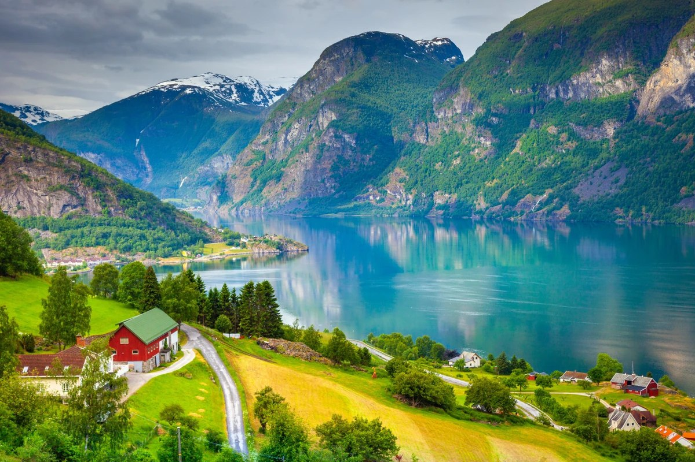
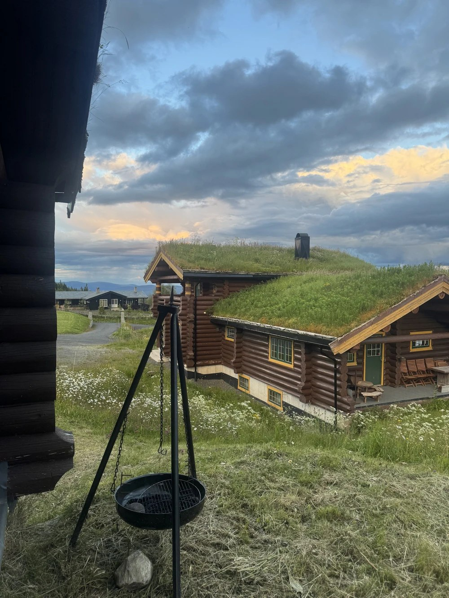

Вызов для смелых
Тролльтунга (Trolltunga) — это каменный выступ на высоте 700 метров над озером Рингедалсватн. Это не обычная туристическая прогулка, а серьезный поход, требующий физической подготовки, но вид с края скалы стоит каждой пролитой капли пота.

